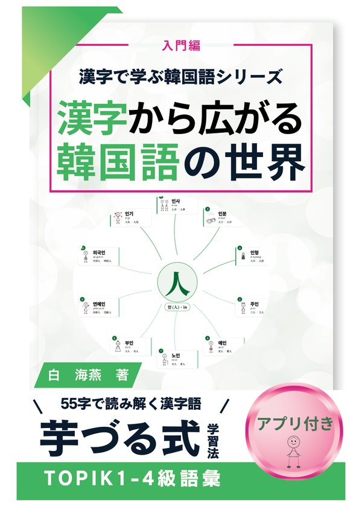
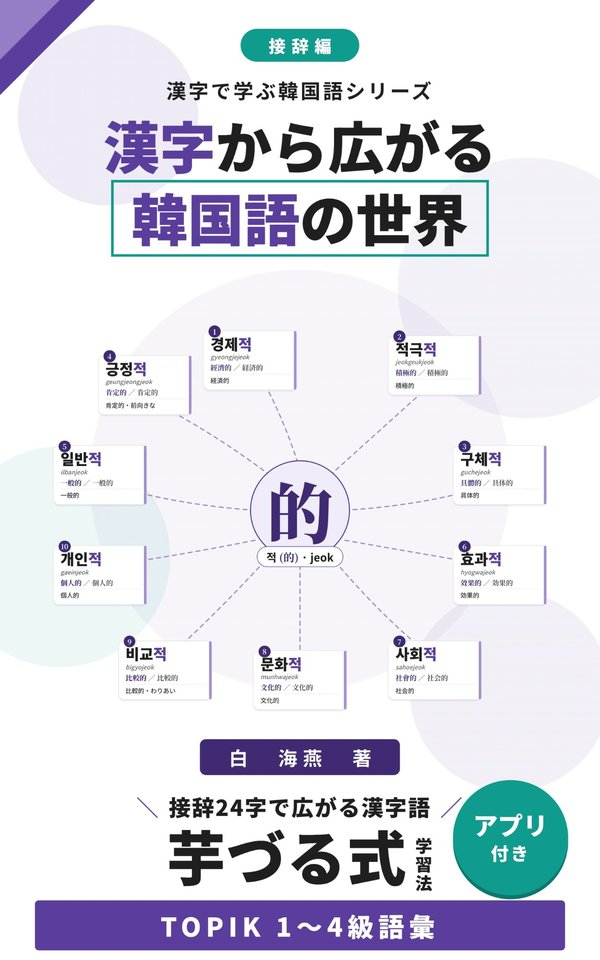
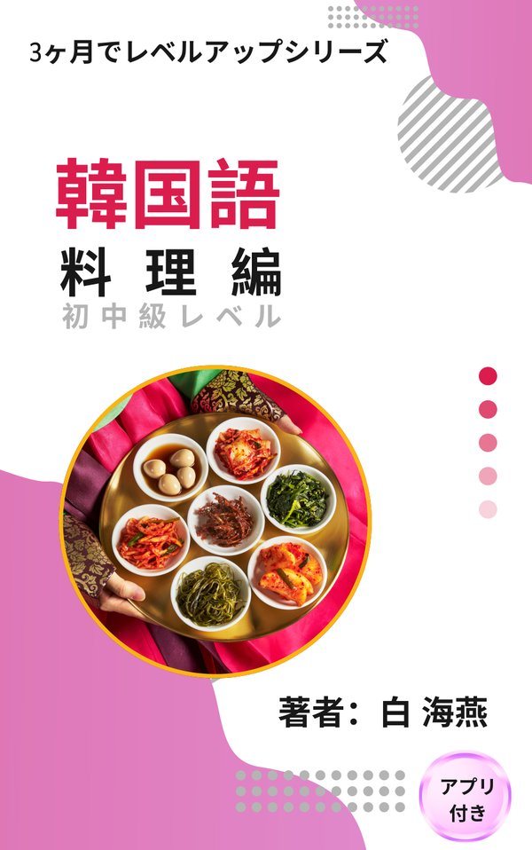
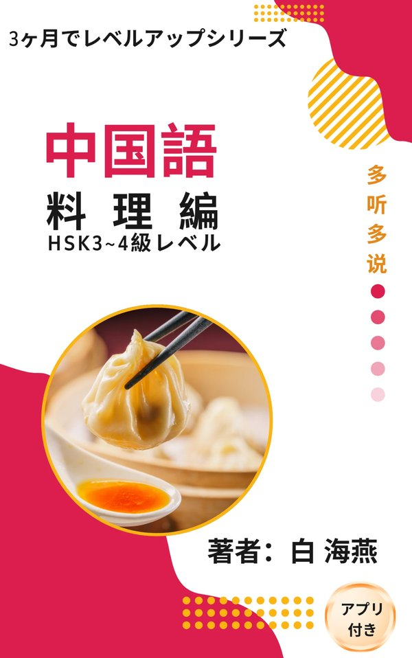
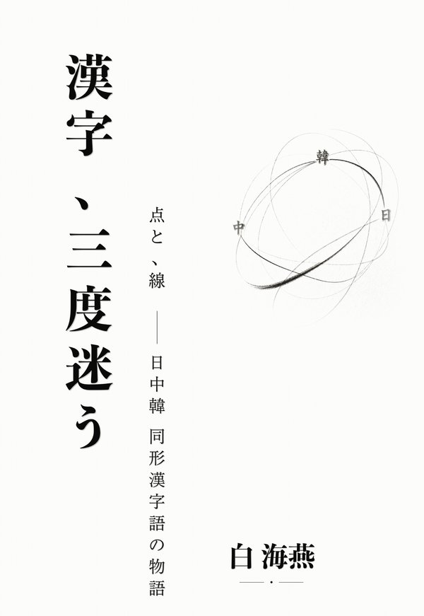

어학 교원을 위한 AI 활용 정보 사이트
백해연 박사(학술)
운영자 소개
白海燕 / Bai Haiyan
중국에서 태어난 조선족입니다. 중학교 때부터 일본어를 배우기 시작해 대학에서는 일본어를 전공했습니다. 그 후 일본의 대학원에 진학해 언어학을 전공했습니다. 몇 년 전에는 한국의 대학에서 한국수어 코퍼스 구축 프로젝트에 연구원으로 참여하며 수어의 세계도 접할 수 있었습니다.
말에 대해 생각하고 배우는 것을 좋아해서, 일상적으로 다양한 언어를 접하며 지내 왔습니다. 현재는 대학에서 중국어・한국어・일본어를 가르치면서, 언어의 ‘왜’를 알기 위해 파고든 것을 논문으로 쓰기도 하고, 어떻게 하면 언어를 더 빨리 습득할 수 있을지, 가르치는 쪽과 배우는 쪽 모두의 효율을 어떻게 높일 수 있을지 매일 모색하고 있습니다.
사이트 소개
어학 교원의 업무에는 반복적인 작업이 많습니다. AI를 활용해 그런 작업을 효율화하고, 남는 시간을 수업 개선과 학생과의 대화에 씁니다. 이 사이트에서는 제가 직접 시도하고 있는 AI 활용 방법과 도구를 구체적으로 공유합니다.
문제 작성, 채점 보조, 어휘 목록 정리 등 반복이 많은 작업을 AI로 줄입니다. 손을 움직이는 시간을 생각하는 시간으로 바꿉니다.
슬라이드, 배포 자료, 음성 교재 제작에 AI를 활용합니다. 준비 시간을 크게 줄여 수업의 질에 집중할 수 있는 환경을 만듭니다.
저서
수업 실천을 바탕으로 AI를 활용해 기획・집필・음성 제작까지 한 교재입니다. 대부분의 책에 음성과 연습 앱이 있어 스마트폰으로 바로 학습할 수 있습니다. 책은 일본어로 쓰여 있으며, 표지를 클릭하면 Amazon 페이지가 열립니다.

Amazon ›한국어 × 한자
한자에서 넓어지는 한국어의 세계 입문편 — 55자로 읽어 내는 줄줄이 한자어 학습
‘人(인)’ 등 기본 55자에서 한국어 한자어를 줄줄이 익히는 입문편. TOPIK 1~4급 어휘 대응. 연습 앱 포함.
한국어 × 한자
한자에서 넓어지는 한국어의 세계 중급편 — 199자로 읽어 내는 한자어
199자의 한자음을 실마리로 중급 수준의 한자어를 체계적으로 넓혀 가는 책. TOPIK 1~4급 어휘, 연습 앱 포함.

Amazon ›한국어 × 한자
한자에서 넓어지는 한국어의 세계 접사편 — 접사 24자로 넓어지는 한자어
‘的’, ‘性’ 등 접사 24자로 한자어를 단숨에 몇 배로 늘리는 접사편. TOPIK 1~4급 어휘, 연습 앱 포함.

Amazon ›한국어
3개월 레벨업 한국어 요리편 — 음성 60트랙・복습 앱 포함
김치볶음밥, 비빔밥, 떡국… 계절의 한국 요리 12가지로 회화와 문법을 배우는 전 12과. 초중급 수준.

Amazon ›중국어
3개월 레벨업 중국어 요리편 — HSK 3~4급 수준
만두, 마파두부, 베이징 덕, 훠궈 등 중국 각지의 요리 12가지로 배우는 전 12과. 본문 음성 93개, 단어 카드 282개의 연습 앱 포함.

Amazon ›한중일 대조
한자, 세 번 헤매다 — 점과 선: 한중일 동형 한자어 이야기
같은 한자어가 중국어・일본어・한국어에서 어떻게 의미가 달라질까. ‘老婆’를 비롯해 세 언어를 오가는 한자어 이야기.
앱
수업과 저 자신의 학습을 위해 AI와 함께 개발한 웹 앱입니다. 설치가 필요 없고 스마트폰 브라우저에서 바로 쓸 수 있습니다. 홈 화면에 추가하면 앱처럼 실행할 수 있습니다. 화면은 주로 일본어입니다.
발음
자음 19・모음 21, 받침, 평음・격음・경음 구별, 자모 조립 게임. 모범 발음을 듣고 자신의 목소리를 녹음해 비교할 수 있습니다.
받침이 다음 음절로 넘어가는 모습을 애니메이션으로 보여 줍니다. 한국어 발음 변화의 원리를 눈으로 보며 이해할 수 있습니다.
4개의 성조, 두 글자 성조 조합, 기본 50단어를 연습합니다. AI가 발음을 채점합니다.
교재 연동
🔒 이용하려면 등록(Google 계정・실명・소속)이 필요합니다. 앱을 열면 등록 화면이 표시됩니다.
전 12과・60트랙의 음성과 단어 카드・문법・받아쓰기 복습 앱. 책의 각 과 QR 코드로도 열 수 있습니다.
본문 음성 93개, 단어 카드 282개, 4지선다 퀴즈, 받아쓰기. 화자별・느린 버전 음성도 수록했습니다.
입문편・중급편・접사편 대응. 한자 드릴・한자 찾기・한자⇔한글 매칭・문장 빈칸 채우기의 4가지 모드로 한국어 한자어를 익힙니다.
영어
활용 사례
수업과 준비에 활용하고 있는 사례입니다. 앞으로도 수시로 추가해 나가겠습니다.
ChatGPT / Claude를 활용한 한국어・중국어 연습 문제 자동 생성
AI로 만든 어휘 목록・단어장 템플릿
학생 작문에 대한 AI 피드백 활용 방법
AI를 활용한 수업 슬라이드의 효율적인 제작 절차
TTS(텍스트 음성 변환)를 활용한 듣기 교재 제작
시험 문제 변형의 자동 생성과 정리